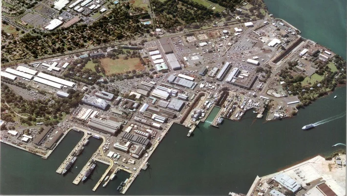
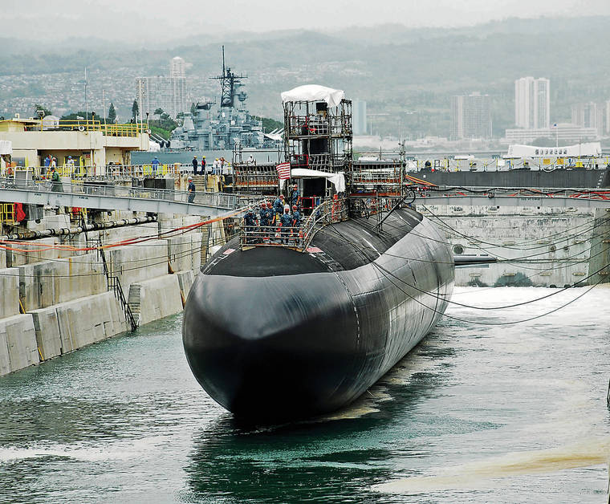

Pearl Harbor Naval Shipyard
Die Pearl Harbor Naval Shipyard ist eine rund 1,2 km² große US-Navy-Werft an der Südküste von O'ahu (Hawaii), die sich am East Loch gegenüber von Ford Island befindet.



Die 1887 durch King Kalākaua als Flottenstützpunkt initiierte Pearl Harbor Naval Shipyard entwickelte sich von einer Kohlestation zu einer strategischen US-Grosswerft, die nach dem Bau des ersten Trockendocks (1919) und der offiziellen Eigenständigkeit im Dezember 1941 zum zentralen industriellen Herzstück der Navy auf O'ahu wurde.
Ohne diese Werft wäre der Pazifikkrieg ganz anders verlaufen.
Kurz & bündig
- Der Ursprung (1887): Alles begann mit einem Deal: König Kalākaua gewährte den USA exklusive Hafenrechte im Tausch für zollfreien Zucker-Export.
- Der 3-Millionen-Dollar-Start: 1908 bewilligte der US-Kongress das Budget für den Bau der Werft, die damals noch schlicht "Navy Yard" hiess.
- Das Drama um Dock #1: Das erste Trockendock stürzte 1913 kurz vor der Eröffnung ein. Erst nach dem Wiederaufbau 1919 wurde es zum technologischen Herzstück.
- Die Unverwüstlichen: Beim Angriff 1941 wurden zwar Schiffe im Dock schwer getroffen, doch die Werkstätten selbst blieben fast unversehrt. Das war der entscheidende Vorteil: Die Reparaturen begannen sofort.
- Rekord-Reparatur: Die USS Yorktown wurde hier im Mai 1942 in absoluter Rekordzeit notdürftig geflickt, um rechtzeitig zur kriegsentscheidenden Schlacht um Midway auszulaufen.
- Neuer Name (2023): Heute ist die Werft Teil der modernen AUKUS-Allianz und trägt den (sehr langen) neuen Namen „Naval Supervising Authority and Lead Maintenance Activity for Submarine Rotational Force - West".